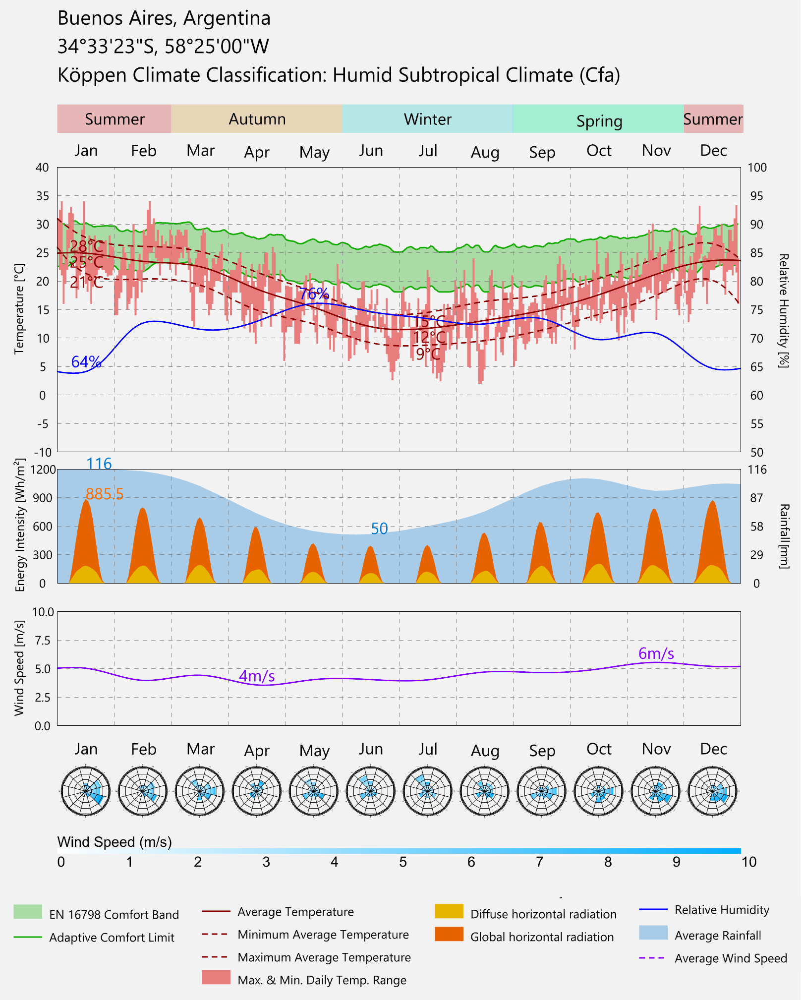
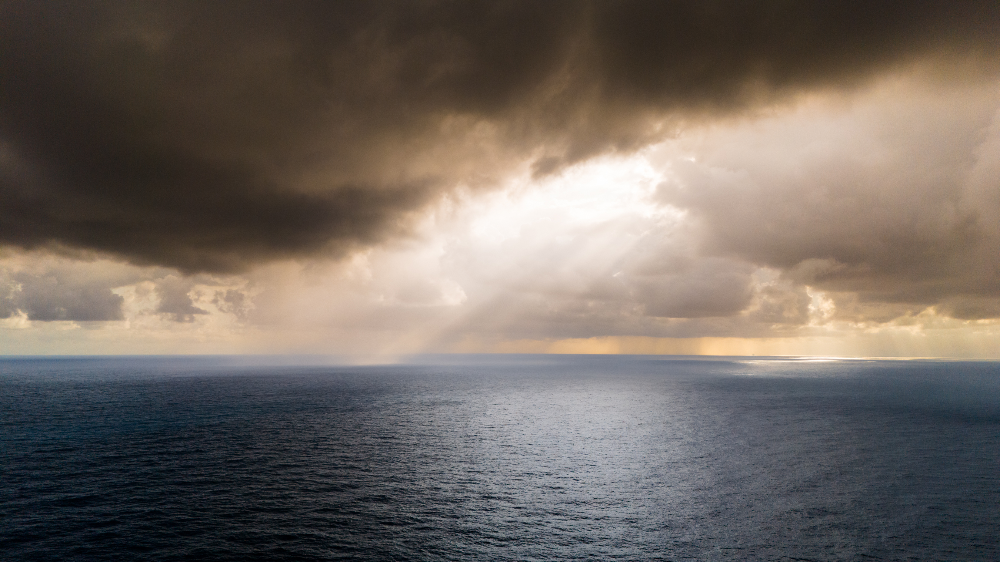

Sustentabilidad
no es un rótulo ni
una
etiqueta.
Para nosotros, significa diseñar
arquitectura que consuma menos energía, dure más años y profundice la relación entre las personas
y la naturaleza.
Es la base de cómo proyectamos.

Nuestro proceso
comienza con la
investigación.
A través del método científico, reducimos la dependencia de los edificios en energía proveniente de combustibles fósiles. Mediante la orientación, la forma y la materialidad, maximizamos el confort y la calidad ambiental interior.
Trabajamos con el sol, el viento y el territorio.
Analizamos datos climáticos locales (radiación solar, patrones de viento,
humedad y variaciones estacionales) y medimos condiciones reales en el sitio. Modelamos el desempeño
mediante simulaciones dinámicas, donde cada decisión se prueba, se calibra y se valida.
No se
supone: se comprueba.

Emisiones globales
de CO2 por sectores
-
9,0%
Otros
-
28,0%
Operaciones de construcción
-
22,0%
Transporte
-
11,0%
Materiales de construcción
-
30,0%
Industria
Cuantificamos el carbono incorporado y el operacional
Evaluamos materiales y demanda energética a lo largo del ciclo de vida del
edificio.
Maximizamos la luz natural y la ventilación mientras controlamos las ganancias térmicas, logrando
condiciones estables a lo largo de las estaciones.
Este enfoque nos permite evitar soluciones
"verdes" genéricas y desarrollar estrategias climáticas específicas para cada proyecto: simples, efectivas
y duraderas.
Un proyecto timbó
no es
hermético:
respira.
Se vincula con su entorno y evoluciona con
quienes lo habitan.
Nuestra arquitectura se adapta a la vida y a sus cambios.